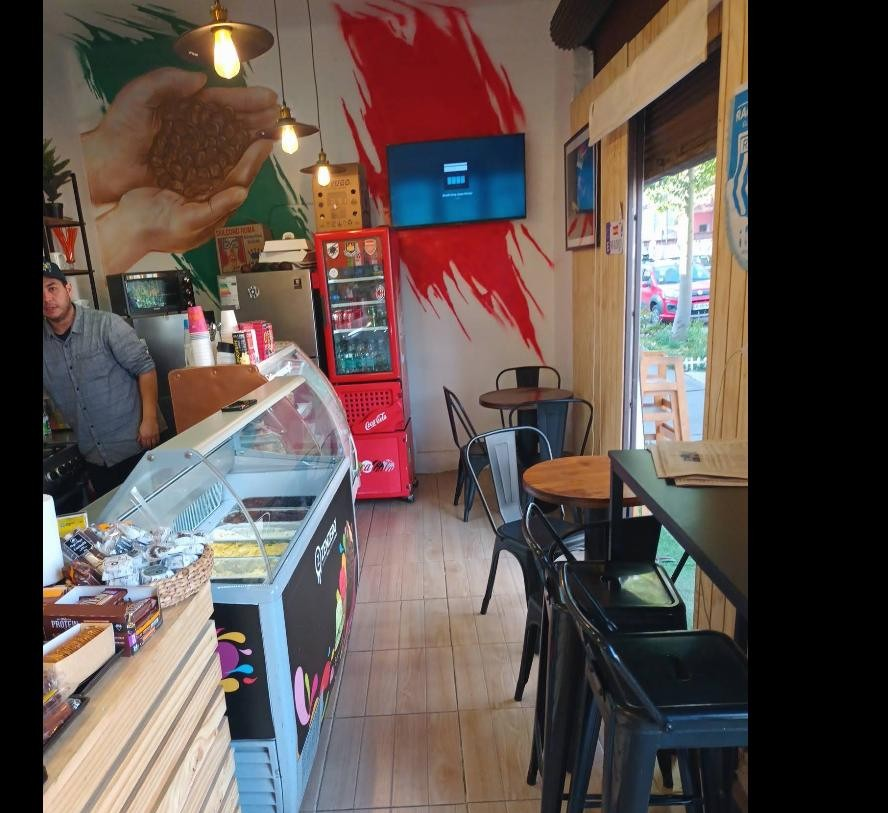

Cafetería, heladería y pastelería italiana en Ñuñoa. Desayunos largos, buena selección de té y postres que se comparten.

Ponterosso abrió en 2012 en José Manuel Infante, en pleno Ñuñoa, con un concepto simple: café italiano, heladería artesanal y pastelería de casa, en un espacio pensado para quedarse un rato — a trabajar con el notebook, desayunar con calma o pasar por un helado camino a otra parte.
El local combina murales pintados a mano —la planta de café que envuelve la fachada, la mano que sostiene los granos, el tricolor italiano— con un ambiente cuidado: buena música, WiFi y atención directa del dueño, algo que varios clientes destacan en sus reseñas.
"El croissant palta pollo muy fresco y sabroso. Fuimos un feriado abierto y la atención buena y cordial. El precio muy bueno comparado con otros lugares de desayuno."
Pedro Fuenzalida · Local Guide"Excelente ambiente, almuerzos ricos y contundentes, buen café (para servir y llevar) y tienen muchas opciones dulces. La atención muy buena, atendido por su dueño, totalmente recomendable."
Cristian Barahona"Un agradable y renovado espacio en un barrio histórico de Ñuñoa... café italiano, WiFi, almuerzos, helados artesanales y muy buena atención. Cabe destacar la música y limpieza del lugar."
Matías DerpichJosé Manuel Infante 2685, 7750082
Ñuñoa, Región Metropolitana
Consumo en el lugar · Para llevar · Servicio a la mesa
Pagos con NFC, tarjetas de crédito y débito · Estacionamiento gratuito en la calle